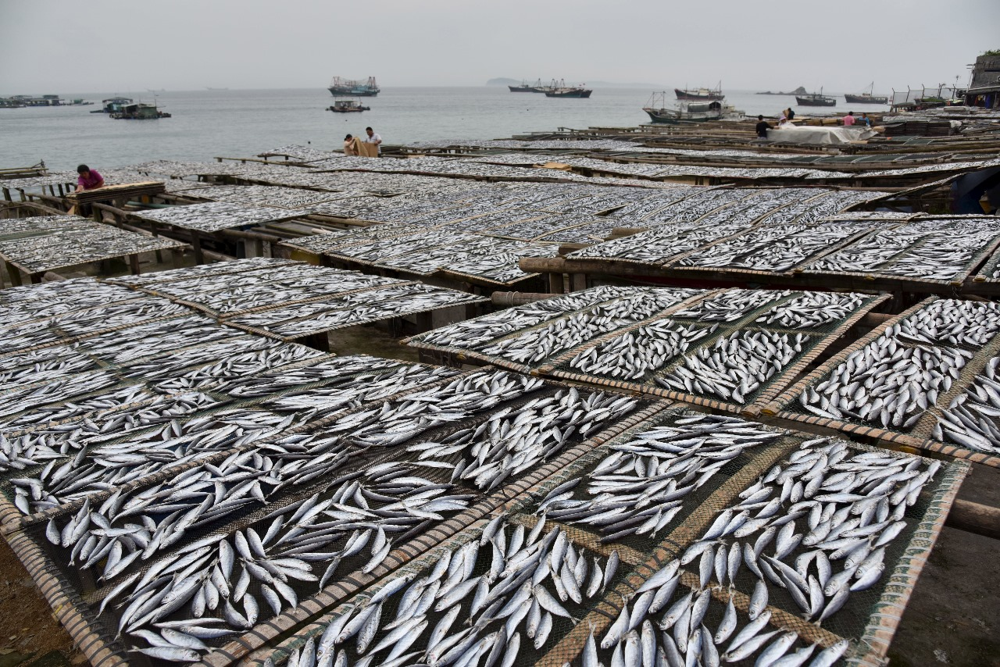
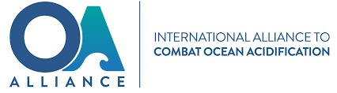

Criminal, unreported, and unregulated (IUU) fishing, and harmful fishing practices are the main objectives of sustainable fisheries management. encouraging sustainable fishing methods as an alternative, which guarantee the long-term viability of fisheries and marine environments. Including as gear limitations, seasonal closures, and quota systems, in the management of fisheries in a sustainable manner.Talk about how fisheries management is changing to take into account the relationships and larger ecological context of marine ecosystems.
Limiting CO2 Emissions: Talk about how, in order to lessen the effects of ocean acidification on marine ecosystems, it is imperative to limit greenhouse gas emissions, especially CO2. The purpose of this discussion is to address studies on methods for enhancing ocean alkalinity, such as restoring pH equilibrium and combating ocean acidification by introducing alkaline materials to saltwater.Coastal habitats, such salt marshes and seagrass meadows, can serve as organic barriers against ocean acidification by absorbing CO2 from the atmosphere. Emphasize the need to preserve these habitats.
Examine cutting-edge approaches to lessen plastic pollution in the oceans, such as enhanced trash disposal techniques, plastic substitutes, and adjustments in consumer behavior.Control of Talk about methods to lessen eutrophication and hazardous algal blooms in coastal waters by cutting back on nutrient runoff from industrial, urban, and agricultural sources. Stress the significance of modernizing the infrastructure for treating wastewater in order to keep pollutants and untreated sewage out of marine habitats.Talk about how companies can reduce marine pollution by redesigning their products, using extended producer responsibility programs, and using responsible production methods.
Examine cutting-edge approaches to lessen plastic pollution in the oceans, such as enhanced trash disposal techniques, plastic substitutes, and adjustments in consumer behavior.Control of Talk about methods to lessen eutrophication and hazardous algal blooms in coastal waters by cutting back on nutrient runoff from industrial, urban, and agricultural sources. Stress the significance of modernizing the infrastructure for treating wastewater in order to keep pollutants and untreated sewage out of marine habitats.Talk about how companies can reduce marine pollution by redesigning their products, using extended producer responsibility programs, and using responsible production methods.
